2. Preparation
2.1 Installing the Batteries
I. Push down on the hook of the battery cover and pull upward.
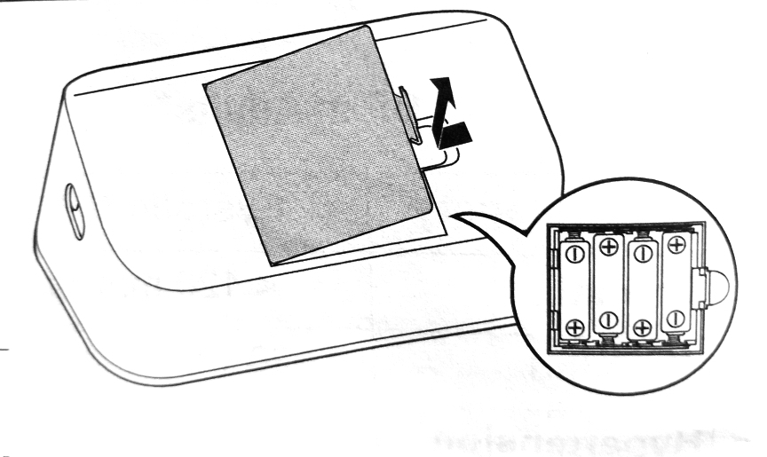
II. Insert 4 "AA" batteries as indicated in the battery compartment.
III. Close the battery cover.
As soon as batteries are correctly installed, the year flashes on the display. Refer to subsection 2.2 to set the date and time manually, or refer to subsection 4.1 to pair your monitor to set the date and time automatically.

2.2 Setting the Date and Time
NoteI. If nothing is displayed, press the Bluetooth button (rear surface of the monitor) to display the year.
If the year is already displayed, skip the step.
II. Press the > forward or < backward button to adjust the year.
Press and hold > button to quickly advance the years.Press and hold the < button to quickly go backwards through the years.
III. Press the Bluetooth button to confirm the year, then the month will flash. Repeat the same steps to adjust the month, day, hour and minute.

IV. Press the Bluetooth button to store the settings.
Your monitor automatically turn off 3 seconds after the minute have been set in the sequence.
Note2.3 Blood Pressure Measurement Tips
To help ensure an accurate reading, follow these directions:2.4 Applying the Arm Cuff
Note⚠️Caution
I. Plug the arm cuff into your monitor by inserting the air plug into the air jack security until it clicks.
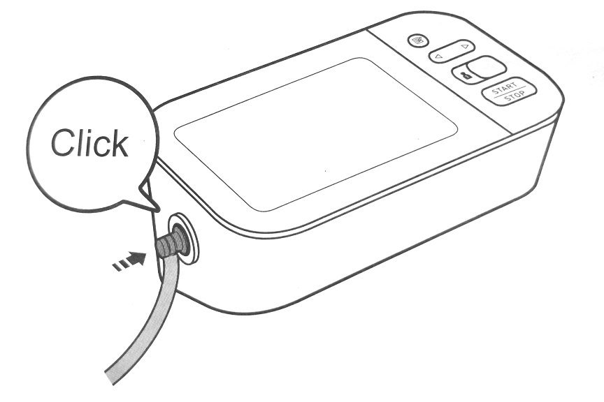
II. Apply the arm cuff to your left upper arm.
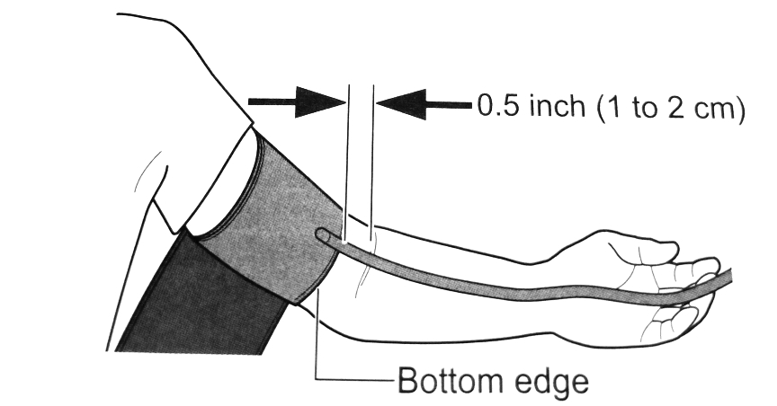
Note
III. Make sure that the air tube is positioned on the inside of your cuff and wrap securely, so it can not move around your arm.
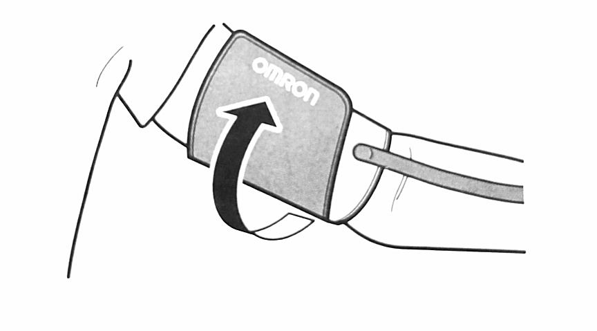
To take a measurement on your right armWhen you take a measurement on the right arm, the air tube should run along the side of your your elbow, along the bottom of your arm. Be careful not to rest your arm on the air tube.

2.5 Sitting Correctly
To take a measurement, you need to be relaxed and comfortably seated in a room with a comfortable temperature. Place your arm on the table.
2.6 Selecting a User ID
Your monitor is designed to take measurements and store the readings i. the memory for 2 people using the [user ID selection] switch.I. Select your user ID (1 or 2).

3. Using Your Monitor without a Smart Device
3.1 Taking a Measurement
You can use your monitor without pairing to a smart device. To pair your monitor with a smart device, refer to sub-section 4.1.Note
I. Press the [START/STOP] button.
All symbols appears on the display before starting the measurement.II. Reamain still and do not talk until the entire measurements process is complete.
The "🖤" symbol flashes at every heartbeat. After your monitor has detected your blood pressure and pulse rate are displayed with the previous reading. If either the systolic or the diastolic reading is high (refer to sub-section 1.3), the "HIGH" symbol appears.
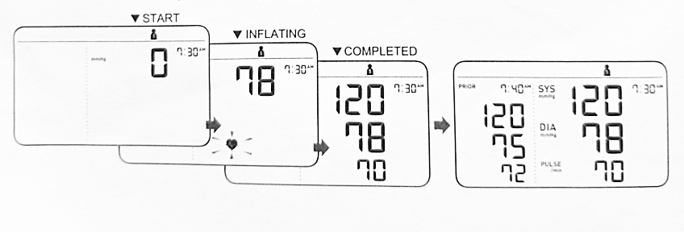
III. Press the [START/STOP] button to turn your monitor off.
Note⬛ Using the Guest Mode
Your monitor stores readings for 2 users in memory. The guest mode can be used to take a single measurement for another user.Note
I. Press and hold the [START/STOP] button for more than 3 seconds.
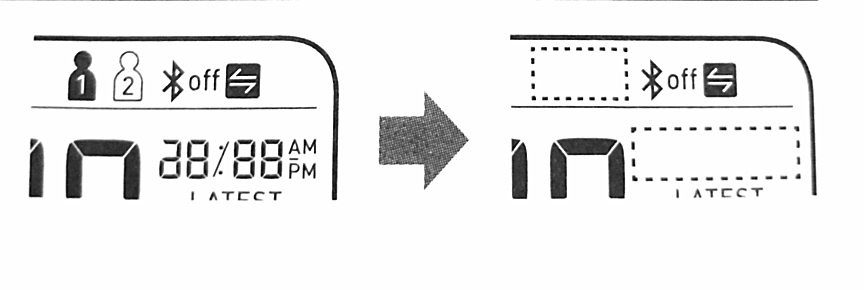
The user ID symbol and the date/time display will disappear.
II. Release the [START/STOP] button when the user ID and date/time display turn off.
The arm cuff automically start to inflate.⬛ If your systolic pressure is more than 210mmHg
If your systolic pressure is more than 210mmHg, take a measurement manually. After the arm cuff start to infate, press and hold the [START/STOP] button until the monitor inflate 30 to 40 mmHg higher than your espected systolic pressure. Note⚠️ Caution
4. Using Your Monitor with a Smart Device
4.1 Pairing Your Monitor with a Smart Device
The date and time on your monitor will automatically be set when you pair your monitor with your smart device.|
|
I. Enable Bluetooth on your smart device.
II. Scan the code below with your smart device camera or visit OmronHealthcare.com/app to find the OMRON compatible app for this product.

III. Download and install the compatible OMRON app onto your smart device.
If you already have the compatible OMRON app and have created your account, open the appand add your new monitor.IV.Open the app and follow the pairing instructions shown on your smart device.
V. Confirm that your monitor is connected successfully.
When your monitor is connected successfully to your smart device, the OK symbol appears.
VI. Press the [START/STOP] button to turn your monitor off.
Note
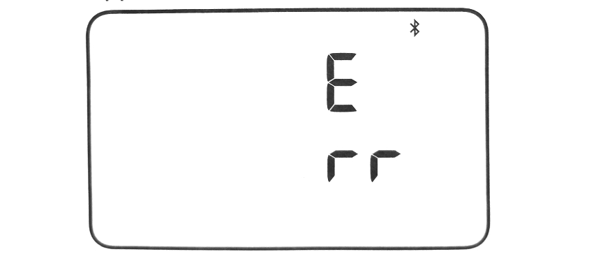
4.2 Take a Measurement
Refer to subsection 3.1 to start a measurement. Open the app on your smart device and follow the instructions.Note
⬛ Transferring Data Automatically/Manually
4.3 Disabling/Enabling Bluetooth
⚠️ WarningBluetooth ie enabled as default.
I. When your monitor is off, press and hold the Bluetooth button (rear surface of the monitor) for more than 10 seconds.
"oFF" flashes 3 times.
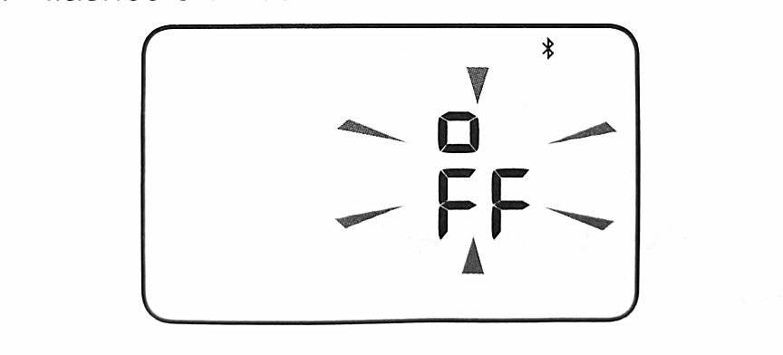
II. Press the [START/STOP] button to your monitor off.
Note
5. Using Memory Function
Your monitor automatically stores up to 60 readings per user.Note
5.1 Viewing the Readings Stored in Memory
I. Select your user ID.
II. Press the 📝 button.

Note
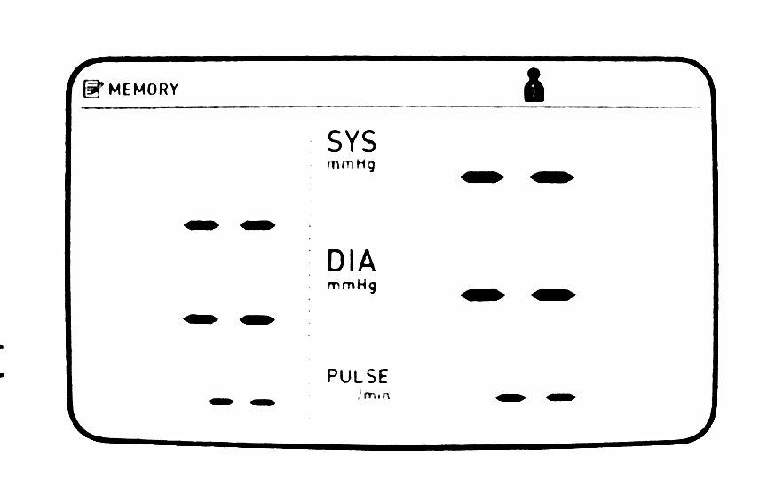
Press the (<] or [>) button repeatedly to scroll through the previous readings stored in the memory.
(<]:To view older readings[>):To view the more recent readings.
5.2 Viewing the Average Reading
Your monitor can calculate an average reading based on the latest 2 or 3 readings taken within the most recent 10 minutes timeframe.Note
I. Select your user ID.
II. When your monitor is off, press and hold the 📝 button for more than 3 seconds.
The "AVG" symbol flashes.
Note
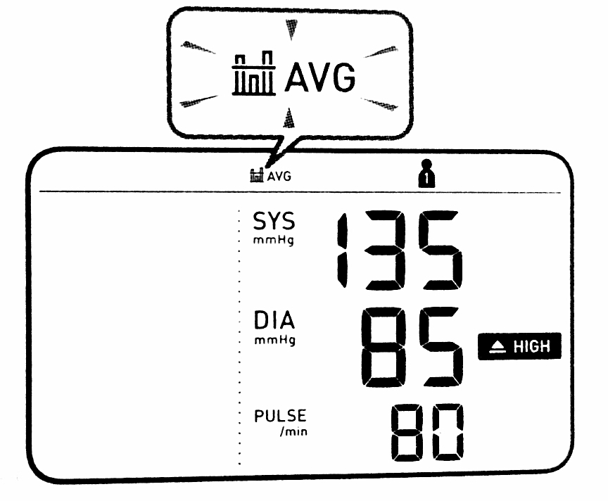
6. Other Settings
6.1 Deleting All Readings Stored in Memory
I. Select your user ID.
II. Press the 📝 button.
After a memory number appears,the latest reading will appear with a past reading.
III. While holding the 📝 button down, press and hold the [START/STOP] button for more than 3 seconds. .
The display as below flashes.
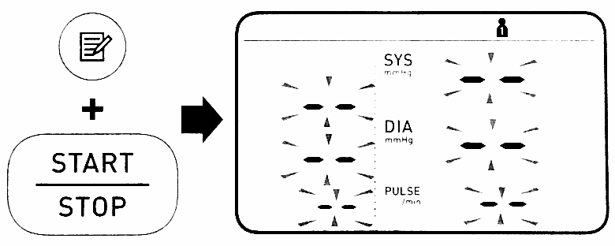
IV. While holding the 📝 button down again, press and hold the [START/STOP] button for more than 3 seconds.
The display stops flashing, then all readings are deleted.
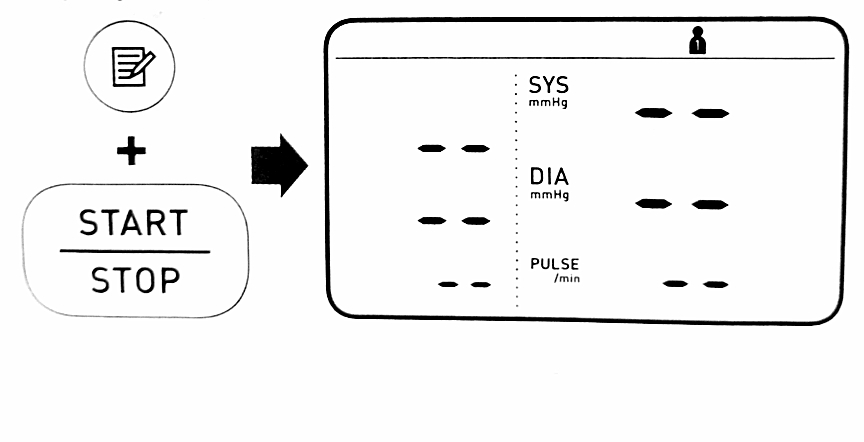
V. Press the [START/STOP] button to turn your monitor off.
Note6.2 Restoring Your Monitor to the default settings
To delete all information stored in your monitor, follow the instructions below. Make sure that your monitor is turn off.I. While holding the Bluetooth button (rear surface of the monitor) down, press and hold the [START/STOP] button for more than 3 seconds.
The display as below flashes.
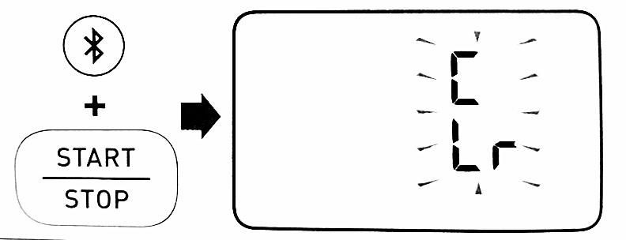
II. While holding the Bluetooth button down again, press and hold the [START/STOP] button for more than 3 seconds.
The display stops flashing, then your monitor is restored to the default settings.
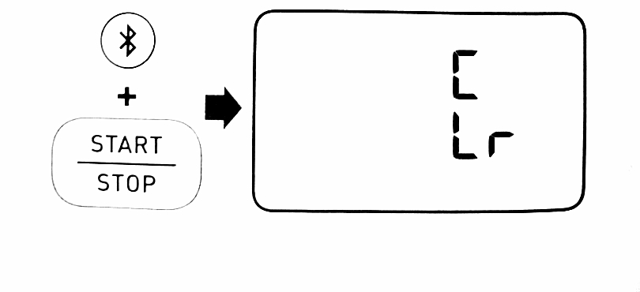
III. Press the [START/STOP] button to tuen your monitor off.
Note
7. Error Message and Troubleshooting
If any of the problem occur during measurement, check to make sure that no other electrical device is between 12 inches (30 cm).If the problem persists, refer to the table below.
| Display/Problem | Possible Cause | Solution |
| E1appears or the arm cuff does not inflate. | The [START/STOP] button was pressed while the arm cuff is not applied. Air plug is not completely plugged into the monitor. The arm cuff is not applied correctly. Air is leaking from the arm cuff. |
Press the [START/STOP] button again to turn the monitor off. After inserting the air plug securely and applying the arm cuff correctly, press the [START/STOP] button.
Insert the air plug securely. Refer to sub-section 2.4. Apply the arm cuff correctly, then take another measurement. Refer to sub-section 2.4. Replace the arm cuff with a new one. Refer to section 9. |
| E2 appears or a measurement cannot be completed after the arm cuff inflates. | The systolic pressure is above 210mmHg and a measurement can not be taken. You move or talk during a measurement. Vibration distrpt a measurement. |
Remain still and do not talk during measurement. If E2 appears repeatedly, infliate the arm cuff manually untill the systolic pressure is 30 to 40 mmHg above your previous readings. Refer to sub-section 3.1.
Inflate the arm cuff manually until the systolic pressure is 30 to 40 mmHg above your previous readings. Refer to sub-section 3.1. |
| E3 appears | The arm cuff is inflated exceeding the maximum allowable pressure. | Do not touch the arm cuff or/and bend the air tube while talking a measurement. If inflating the arm cuff manually, refer to sub-section 3.1. |
| [E4] appears | You move or talk during a measurement and the arm cuff does not inflate sufficiently. | Remain still and do not talk during a measurement. |
| E5 appears
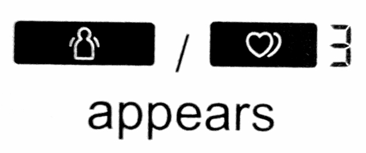
|
The pulse rate is not detected correctly. | Apply the arm cuff correctly, then take another measurement. Refer to sub-section 2.4. Remain still and sit correctly during a measurement. If the 3hert symbol continues to appear, we recommend you to consult with your physician. |
| Er appears | The monitor has malfunctioned | Press the [START/STOP] button again. If "Er" appears, contact customer service. Refer to section 12. |
| Err appears | The monitor cannot connect to a smart device or transmit data correctly. | Follow the instructions shown in the app. If the Err symbol still appears after checking the app, contact customer service. Refer to section 12. |
| P flashes | The monitor is waiting for pairing with the smart device. | Refer to sub-section 4.1 for pairing your monitor with your smart device, or press the [START/STOP] button to cancel pairing and turn your monitor off. |
| O flashes | The monitor is waiting for pairing with the smart device. | Open the app to transfer your readings. |
| Share icon flashes Share icon appears |
There are more than 48 readings in memory to be transferred. The date and time is not set. There are 60 readings in memory to be transferred. |
Pair or transfer your readings to the app so you can keep them in memory in the app, and disappears. |
| Battery half/low icon flashes | Batteries are low. | Replacing all 4 batteries with new ones is recommended. Refer to sub-section 2.1. |
| Battery Empty icon appears or the monitor is turned off unexpectedly during a measurement. | Batteries are depleted | Immediately replace all 4 batteries with new ones. Refer to sub-section 2.1. |
| Nothing appears on the display of the monitor. | Battery polarities are not properly aligned. | Check the battery installation for proper placement. Refer to subsection 2.1. |
| Readings appears too high or too low | Blood pressure varies constantly. Many factors including stress, time of day, and/or how you apply the arm cuff, may affect your blood pressure. Review subsection 2.3 - 2.5 and section 3. | |
| Any other communication issue occurs | Follow the instructions shown in the smart device, or visit the "Help" section in the app for further help. If the problem still persists, contact customer service. Refer to section 12. | |
| Any other problems occur. | Press the [START/STOP] button to turn the monitor off, then press it again to take the measurement. If the problem continues, remove all batteries and wait for 30seconds. Then re-install the batteries. If the problem still persist, contact customer service. Refer to section 12. |
8. Maintenance
8.1 Maintenance
To protect your monitor from damage, follow the directions below:8.2 Storage
Store your monitor and other components in a clean, safe location.I. Remove the arm cuff from the monitor.
⚠️ CautionII. Gently fold the air tube into the arm cuff.
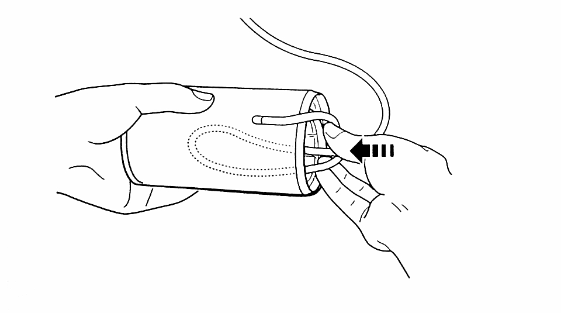
Note
8.3 Cleaning
8.4 Disposal
Dispose of your monitor, other components and optional accessories according to applicable local regulations.Unlawful disposal may cause environmental pollution.
9. Optional Accessories
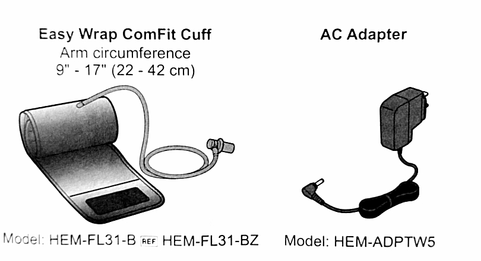
Note
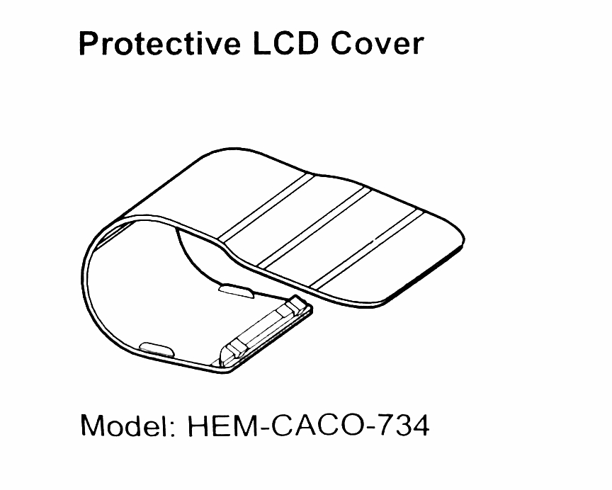
For further information, visit our website at OmronHealthcare.com
Using the AC Adapter (optional accessory)
NoteI. Insert the AC adapter plug into the AC adapter jack on the right side of your monitor.
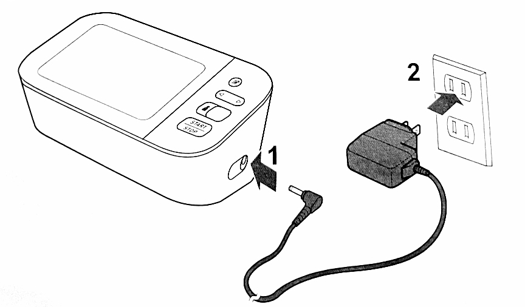
II. Plug the AC adapter into an electrical outlet.
To unplug the AC adapter, unplug the AC adapter from the electrical outlet and then remove the AC adapter for the monitor.⚠️ Caution
10. Specifications
| Model | BP7350 ref HEM-730T-Z |
| Display | LCD digital display |
| Cuff pressure range | 0 to 299 mmHg |
| Blood pressure measurement range | SYS:60 to 260 |
| Pulse measurement range | 40 to 180 beats/min. |
| Accuracy | Pressure: +/-3 mmHg Pulse: +/-5% of display reading |
| Inflation | Automatic by electric pump |
| Deflation | Automatic by pressure release valve |
| Measurement method | Oscillometric method |
| Transmission method | Bluetooth ® Low Energy |
| Wireless communication | Frequency range 2.4 GHz (2400 - 2483.5 MHz) Modification: GFSK Effective radiated power < 20dBm |
| Operation mode | Continues operation |
| IP classification | Monitor: Ip20 Optinal AC adapter: IP21 |
| Rating | DC6 V 4.0W |
| Power source | 4"AA" Batteries 1.5V or optional AC adapter (INPUT AC100 - 240 V 50 - 60 Hz 0.12 - 0.065 A) |
| Battery life | Approximately 1000 measurements (using new alkaline batteries) |
| Durable period (Service life) | Monitor: 5 years Arm cuff: 5 years Optional AC adapter: 5 years |
| Operating condition | +50°F to +104 °F (+10 °C to +40 °C)/ 15 to 90% RH (non-condensing)/800 t0 1060 hPa |
| Storage/Transport condition | -4°F to +140°F (-20°C to +60°C)/10 to 90%RH (non-condensing) |
| Weight | Monitor: Approximately 16.2 oz. (460g) not including batteries Arm cuff: Approximately 5.8 oz. (163g) |
| Dimensions | Monitor: Approximately 7.5" (I) (191mm x 85mm x 120mm) Arm cuff: Approximately 5.7" x 20.9" (air tube: 29.5) (145mm x532mm) (air tube: 750mm) |
| Cuff circumference applicable to the monitor | 9" to 17" (220 to 420mm) |
| Memory | Storage up to 60 readings per user |
| Content | Monitor, Easy Wrap ComFit Cuff, 4"AA" batteries, instruction manual, quick start guide |
| Protection against electric shock | Internally powered ME equipment (When using only batteries) Class II ME equipment (Optional AC adapter) |
| Applied part | Type BF (arm cuff) |
| About a wireless communication interference This product operates in an unlicensed ISM band at 2.4GHz in the event this product is used near other wireless device such as microwave and wireless LAN, which operates on the same frequency band as this product, there is a possibility that interference may occur. If interference occurs, stop the operation of other devices or relocate this product away from other wireless devices before attempting to use it. |
Pictogram on the product
| Type of marks used to indicate the correct positioning of the artery for the upper arm | |
| Indicates the type of cuff that is compatible with the blood pressure monitor. |
11. FCC Statement
FCC CAUTION Changes or modifications not expressly approved by the party responsible for compliance could void the user's authority to operate the equipment. This device complies with part 15 of the FCC Rules. Operation is subject to the following two conditions: (1) This device may not cause harmful interference, and (2) this device must accept any interference received, including interference that may cause undesired operation.Note
This equipment complies with FCC radiation exposure limits set forth for an uncontrolled environment and meet the FCC radio frequency (RF) Exposure Guidelines. This equipment has very low levels of RF energy that are deemed to comply without testing of specific absorption ratio (SAR).
12. Limited Warranty
Your BP7350 Blood Pressure Monitor, excluding the arm cuff and batteries is warranted to be free from defect in materials and workmanship appearing within 5 years from the date of purchase, when use in accordance with the instructions provided with the monitor. The arm cuff is warranted to be free from defect in materials and workmanship appearing withen 1 year from the date of purchase when the monitor is used in accordance with the instructions provided with the monitor. The above warranty extends only to the original retail purchaser, and only to products purchased from Omron authorized seller who is subject to and follows Omron's quality control standards. unless otherwise prohibited by law.We will, at our option, replace without charge any monitor or arm cuff covered by the above warranty. Replacement is our only responsibility and your remedy under the above warranty. To obtain warranty service contact Customer Service by calling 1-800-634-4350 for the address of the inspection center and the return shipping and handling fee that may apply.
Enclose the original printed receipt. Including a letter, with your name, address, phone number, and description of the specific problem.
Pack the product carefully to prevent damage in transit. Because of possible los in transit, we recommend insuring the product with return receipt requested.
THE FOREGOING IS THE SOLE WARRANTY PROVIDED BY OMRON IN CONNECTION WITH THIS PRODUCT, AND OMRON HEREBY DISCLAIMS ANY OTHER WARRANTIES, EXPRESS OR IMPLIED, INCLUDING IMPLIED WARRANTIES OF MARCHANTABILITY AND FITNESS FOR A PARTICULAR PURPOSE. IMPLIED WARRANTIES AND OTHER TERMS THAT MAY BE IMPOSED BY LAW, IF ANY, ARE LIMITED IN DURATION TO THE PERIOD OF THR ABOVE EXPRESS WARRANTY. SOME STATES DO NOT ALLOW LIMITATIONS OF HOW LONG AN IMPLIED WARRANTY LASTS, SO THE ABOVE LIMITATION MAY NOT APPLY TO YOU.
OMRON SHALL NOT BE LIABLE FOR LOSS OF USE OR ANY OTHER SPECIAL, INCIDENTAL, CONSEQUENTIAL OR INDIRECT COSTS, EXPRESES OR DAMAGES.
SOME STATES DO NOT ALLOW THE EXCLUSION OR LIMITATION OF INCIDENTAL OR CONSEQUENTIAL DAMAGES, SO THE ABOVE LIMITATION OR EXCLUSION MAY NOT APPLY TO YOU.
This warranty provides you with special legal rights, and you may have other rights that vary by jurisdiction. Because of special local requirements, some of the above limitations and exclusions may not apply to you.
| FOR CUSTOMER SERVICE Visit our web link at: OmronHealthcare.com Call toll free: 1-800-634-4350 |
13. Guidance and Manufacturer's Declaration
OMRON Battery-operated / Ac Adapter-operated Blood Pressure Monitor information on for Accompanying Documents in the Scopes of IEC60601-1-2:2014Important information regarding Electromagnetic Compatibility (EMC)
| BP7350 conforms to IEC60601-1-2:2014 Electromagnetic Compatibility (EMC) standard. Further documentation in accordance with this EMC standard is available at OmronHealthcare.com/emc. Refer to the EMC information for BP7350 on the website. |
The Bluetooth® word mark and logo are registered trademarks owned by Bluetooth SIG, Inc. and any use of such marks by OMRONHEALTHCARE Co., Ltd. is under license. Other trademarks and trade names are those of their respective owners.
1